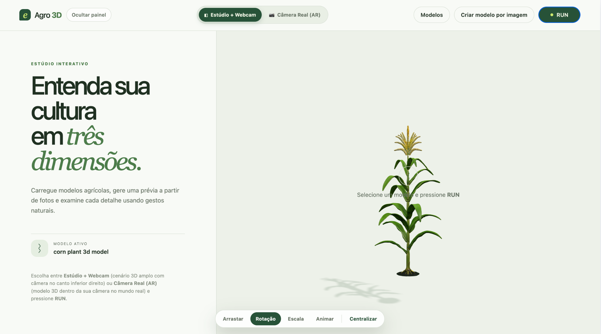
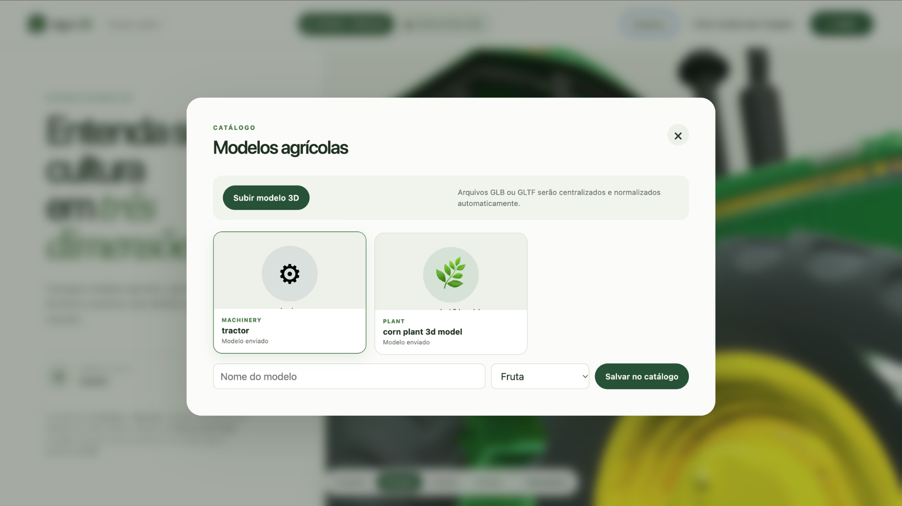
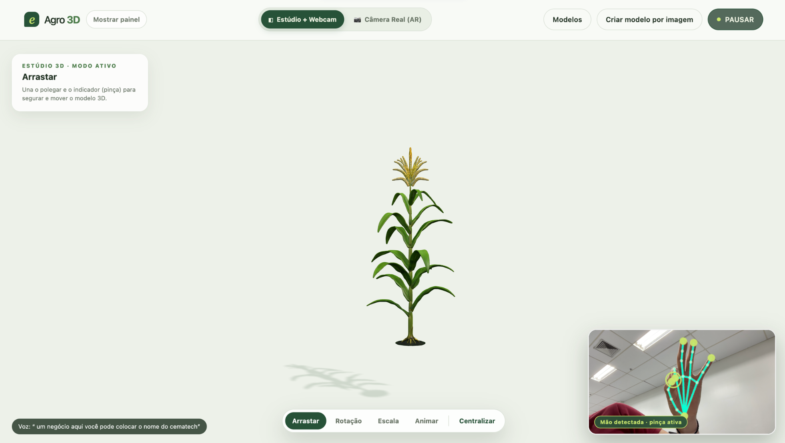
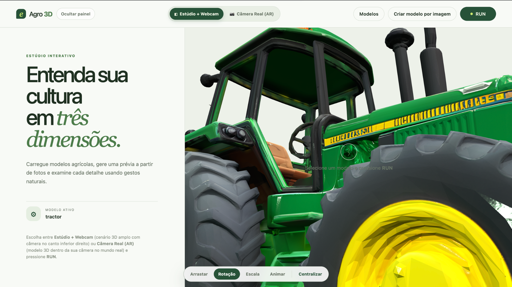
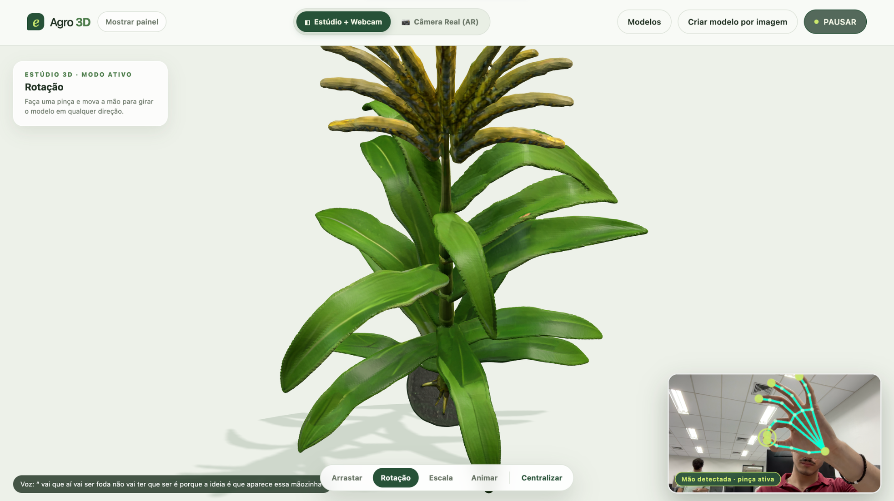

Controle o Agro em 3D
com o Gesto das Mãos.
Apresentamos o e-Agro 3D Studio: uma experiência interativa onde visitantes manipulam culturas e máquinas agrícolas no ar usando Visão Computacional (Pinça 🤏) e Comandos de Voz 🎙️.
AWS Student Builder Group · SENAI CIMATEC
“Conectando a academia, a nuvem e o campo: Agro, orgulho da Bahia.”

Experiência Touchless (Sem Mouse ou Teclado)
Clique na imagem para ampliar em tela cheia
Por que essa ativação será um Ímã de Público?
Interação no Ar que Para o Corredor
- ▸ Visitante levanta a mão na frente da TV e gira um trator 3D sem encostar em nada.
- ▸ Gera curiosidade instantânea, vídeos e compartilhamento orgânico da feira.
Tecnologia Prática para o Produtor
- ▸ Inspeção em 360° de máquinas, drones e peças internas segmentadas.
- ▸ Digitalização rápida de frutos e sementes em 3D a partir de uma simples foto.
Educação e Orgulho do Agro Baiano
- ▸ Jovens, estudantes e famílias exploram de perto as culturas que movem a Bahia.
- ▸ Traduz na prática o lema: “Agro, orgulho da Bahia”.
O que o e-Agro 3D Studio faz?
📦 1. Catálogo Agrícola 3D
.GLB / .GLTFModelos prontos divididos em Máquinas, Plantas, Frutos, Sementes e Mudas, além de importação instantânea por Drag & Drop.
📷 2. Conversão Foto 2D ➔ 3D
Rembg + TrimeshTira o fundo de fotos automaticamente e constrói uma malha 3D interativa na hora (modo procedural sem GPU, local ou nuvem).
🥽 3. Estúdio 3D + Câmera Real (AR)
Three.js WebGLVisualize no Cenário Estúdio ou sobreposto ao mundo real do estande pela webcam.

Pinça com a Mão 🤏 Aumentando, Diminuindo e Movendo a Figura 3D

Aplicações Práticas no Agronegócio Baiano

Capacitação e Manutenção: gire tratores e pulverizadores em 360° ou separe componentes internos no modo Animar.

Inspeção Morfológica: dê zoom com a pinça para examinar folhas, raízes, frutos e sementes em detalhes.
Arquitetura Robusta: Do Browser à Nuvem
Interação a 60 FPS
🧊 Three.js (WebGL)
Renderização 3D em tempo real de arquivos GLB/GLTF.
✋ MediaPipe Hand Tracking
Rastreia 21 nós da mão e detecta a pinça no cliente.
🎙️ Web Speech API
Troca modos por voz (“arrastar”, “girar”, “escala”, “animar”).
Clean Architecture
presentation/
API REST em FastAPI + Injeção de Dependências.
application/
Casos de uso: Catálogo, Upload 3D e Image-to-3D.
domain/ & infrastructure/
Rembg + Pillow (remove fundo) e Trimesh (malha 3D).
3 Motores 3D
1. Procedural (Offline / Sem GPU)
Gera malha 3D colorida instantânea sem internet.
2. Local (Multiview)
Reconstrução 3D local combinando múltiplos ângulos.
3. Cloud API (Nuvem)
Integração via EAGRO_3D_API_URL para alta densidade.
Sobe em 1 Comando: Estabilidade Total na Feira
# 1. Inicia todo o sistema no estande:
$ ./eagro.sh start
✔ Configura backend/.venv e valida dependências
✔ Sobe API FastAPI + Frontend em http://127.0.0.1:8080
# 2. Verifica status ou encerra com segurança:
$ ./eagro.sh status | ./eagro.sh stop
Setup Físico Simples
Apenas 1 Notebook + 1 TV/Monitor + 1 Webcam posicionada para o corredor.
100% Offline-First
Funciona perfeitamente mesmo sem internet no pavilhão, com latência zero.
Equipe AWS Student Builder Group · CIMATEC
Estudantes do SENAI CIMATEC dedicados durante os 3 dias guiando os visitantes.
Inovação Baiana que
Você Controla com as Mãos.
O e-Agro 3D Studio já está pronto, testado e rodando. Queremos levar essa ativação personalizada do AWS Student Builder Group do SENAI CIMATEC para a 8ª edição da e-Agro!
📸 Clique em qualquer captura real do nosso sistema para ampliar:
Explore o Código & Demo
github.com/Leofter/CV-controling-3d-model